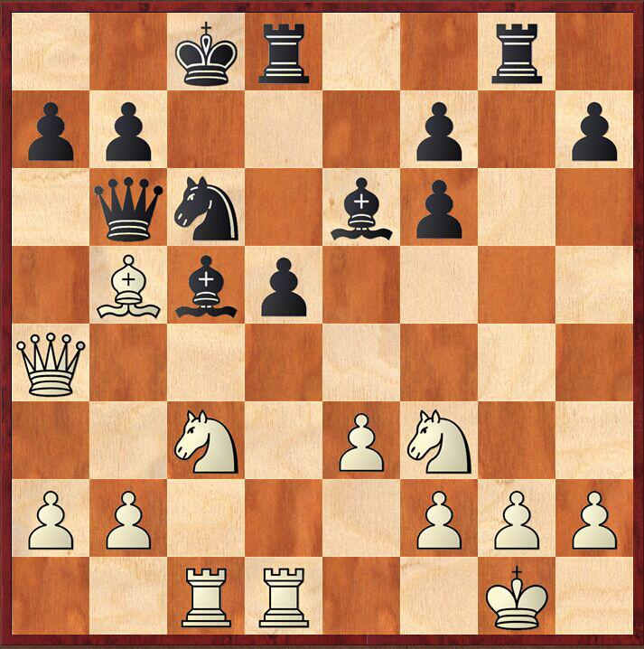
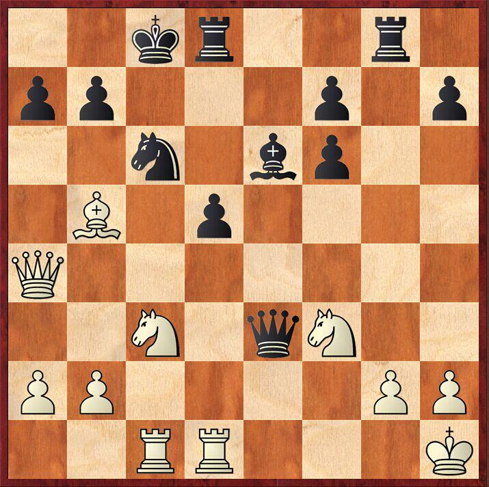
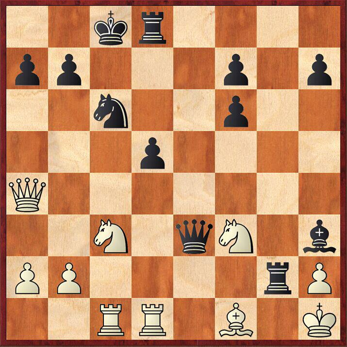
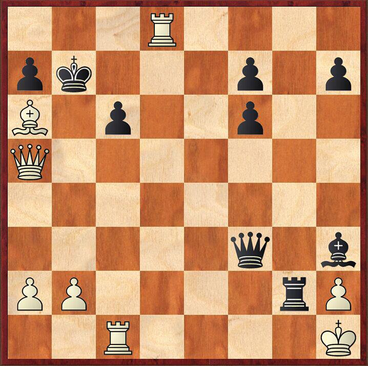

王一是一个典型的战术型棋手，攻杀凌厉，常常能够在复杂局面中找到致胜的关键着法。所以对于我来说，避开对手的锋芒是很关键的。而我更加擅长所谓的局面弈法，因此一开始我就选择了较为封闭的下法，引诱对手采取积极的行动，从而暴露局面的弱点。
1...d5 2.d4 e6 3.c4 Nf6 4.Nc3 c5至此形成了后翼弃兵开局中的塔拉什变化，其开局特点是黑方可以更好的采取积极的行动，而弱点则是中心的d5孤兵。这个开局也很符合王一的行棋风格。
5.cxd5 exd5 6.Bg5 Be6 7.e3 Be7 8.dxc5我总喜欢在黑方走动黑格象以后再吃c5兵，这样可以让黑方浪费一步棋的时间。
8...Bxc5 9.Bb5+这步棋实际上是准备用黑格象交换对手的f6马，同时迫使黑方用兵吃，以达到破坏黑方兵型的目的。
9...Nc6如果黑方走9...Nbd7？将会直接被10. Bf6！否定。
10.Qa4 Qb6?!赛后王一说到这步棋的思路，实际上黑方是在寻求一些反击机会，所以不惜牺牲王翼的兵形，来换取更好的进攻机会。此时黑方较为简单的走法是10... 0-0!，在白方11.Bxc6 bxc6 12.Qxc6 Rc8 13.Qa4 h6黑方快速出动的子力和灵活的双象可以补偿一个小兵的损失。
11.Bxf6 gxf6 12.0-0 Rg8 13.Rfd1 0-0-0 14.Rac1 在我的判断里，白方子力全部出动，而黑方目前兵型散乱，拥有的进攻机会其实并不是很多。当时觉得只要有机会兑一些子，然后下下残局，白方基本上就赢了。但是...
14...Be3!!晴天霹雳！
15.fxe3 Qe3+ 16.Kh1 完全是被迫的防守了。16. Kf1？Rxg2！黑胜。
16...Bh3?!赛后分析这步棋并不是很精确。较好的走法是16...Rg2! 17.Rf1（唯一的走法。17.Kxg2是不行的，因为17...Bh3+!白方将会被连杀）Rf2 18.Rxf2 Qxc1+ 19.Rf1 Qxb2 20.Nd1 Qc1 尽管黑方少一子，但是多四个小兵，加上对于白王进攻的机会，黑方的局面还是很舒服的。当然，实战当中面对这样的复杂局面，出现一些小的失误还是可以理解的。
17.Bf1! Rg2! 黑方的棋子排山倒海的冲向白方，白王的阵地已经漏洞百出了。目前黑方又威胁攻击f3马。眼看白方就要守不住了。然而...
18.Nd5!!几乎是白方唯一的着法！但是却挽回了一个濒临输棋的局面。目前情况下白方死守是肯定没有出路的,如果18.Bxg2? Bxg2+ 19.Kxg2 Rg8+白王将被连将杀死。唯一的办法就是寻找对方阵地当中的弱点。经过长考后，我找到了对方弱点：黑王！
18...Qxf3?由于时间紧张，王一实战中出现了漏洞。赛后王一承认，她低估了18.Nd5!!对于黑方王的威胁。此时黑方较顽强的走法是18...Rxd5 19.Rxc6+ Kb8 20.Rxd5 bxc6 21.Rd3由于黑方的后和车同时被攻击，所以黑方还要再丢一子，白胜。
19.Ne7+!进攻是最好的防守！白方吹响了反攻的号角。
19...Kb819...Kc7也不行，白方可以20.Qa5+! b6 21.Qxa7+然后杀王。
20.Nxc6+ bxc6 21.Rxd8+ Kc7 22.Qa5+ Kb7 23.Ba6# 最终白方依靠强大的反击杀死了黑王，1-0。而白方的王离被杀死只有一步棋！而且身边全都是黑方的棋子！由此也可以看出双方中局的激烈程度。对于正在学棋的小朋友们来说，当遇到对手走出我们没有预料到的着法时，一定要冷静、沉着的应对，往往胜负的关键只在你一步棋的处理当中。希望大家给本篇棋评提出宝贵意见！谢谢！